Graphics part I
Pablo Gomez
We will continue using the data set from the previous section to
introduce some basics of data visualization. Some libraries can include
data sets that once you install the library you can use. In this case we
will use data from the STNet library, if you dont have it
installed yet make sure you do by using:
# Install STNet from github
devtools::install_github('spablotemporal/STNet')# Load the libraries
library(ggplot2) # for graphics
library(dplyr) # For data manipulation
library(STNet)
# loading the data from the package
farms <- STNet::SwineFarms
PRRS <- STNet::PRRS
mov <- STNet::SwineMov1 Plots in R
By default R already has a set of functions to create a variety of
figures, but the code can get quite complex and difficult to read as we
produce more detailed figures. ggplot2 is a library that
provides a set of functions for producing a variety of figures.
The basic components that we need to define for a plot are the following:
- data, the data set we will use to generate the figure
- geometry, or type of graphic we will generate (i.e. histogram, bar, scatter, etc..)
- aesthetic, variables or arguments that will be used for the figure for example: location, color, size, etc..
An example:
ggplot(data = PRRS) + # This is the data we will use
geom_histogram( # This is the geometry
aes(x = Age) # The aesthetic includes only one variable representing the x axis
)
Other components of the plots can be defined to further customize our
figures, and we will cover those more in detail in future
sections.
As you noticed in the previous example, we can print the figures
directly from the R console, but a way I like to organize our figures is
to put them all inside a single object in R. This object can be a
list, which is just a container for other objects.
# To create an empty list we can use the function list()
figures <- list()2 Visualizing distributions
2.1 Continous variables
2.1.1 Histograms
The most simple way to visualize the distribution of a continuous variable is using a histogram. Histograms are a special kind of bar plots where our variable is grouped in bins and showing the counts for each bin. Now that we have our container list for the plots, we can simply save it there and assign a name we want.
figures$histogram <- PRRS %>%
ggplot() +
geom_histogram(aes(x = Age))
# we can see our plot by calling the name in our container list
figures$histogram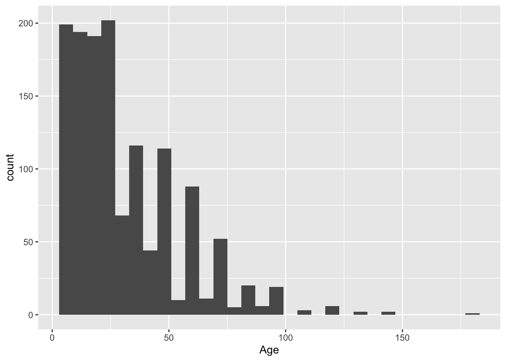
2.1.2 Boxplots
Box plots are great to show the distribution of a continuous variable. We can use it to show only one variable, or multiple variables. It is important to be very descriptive when making plots, the idea of a figure is that can explain itself. we will start to slowly introduce functions to do this and customize our figures.
# Only one variable
figures$box <- PRRS %>%
ggplot() +
geom_boxplot(aes(y = Age)) +
labs(title = 'Distribution of Age') # we can add different labels such as the main title
figures$box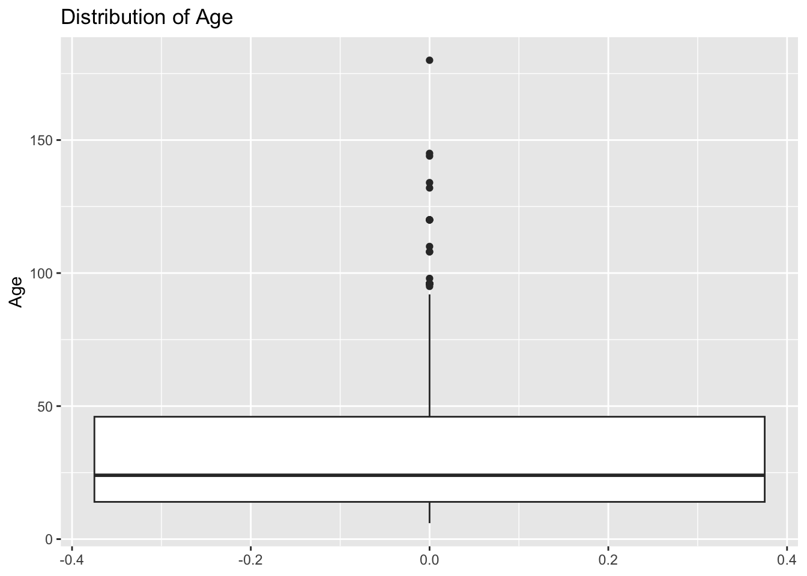
2.2 Frequencies (Barplots, bubbles, mozaics, Pie charts)
2.2.1 Barplots
figures$bars <- PRRS %>%
count(farm_type) %>%
ggplot() +
geom_bar(aes(
x = farm_type, # X axis
y = n # Y axis
), stat = 'identity') # type of barplot
figures$bars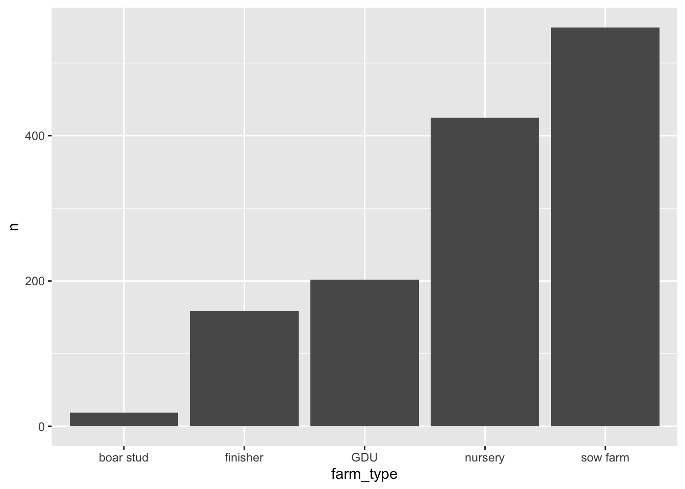
3 Visualizing relationships
3.1 Scatterplots
This is one of the most popular kind of plots, it is useful to
represent relationship between two continuous variables.
We can achieve the same result in different ways. The first one is
better when we have our variables in the same dataset, and the second
one when we have data from different objects. (the length of the two
vectors has to be the same).
figures$scatter <- farms %>% # first we start with the name of our data.frame
ggplot() + # then we call ggplot
geom_point(aes(x = outgoing, y = incoming)) # and we add layer for points
figures$scatter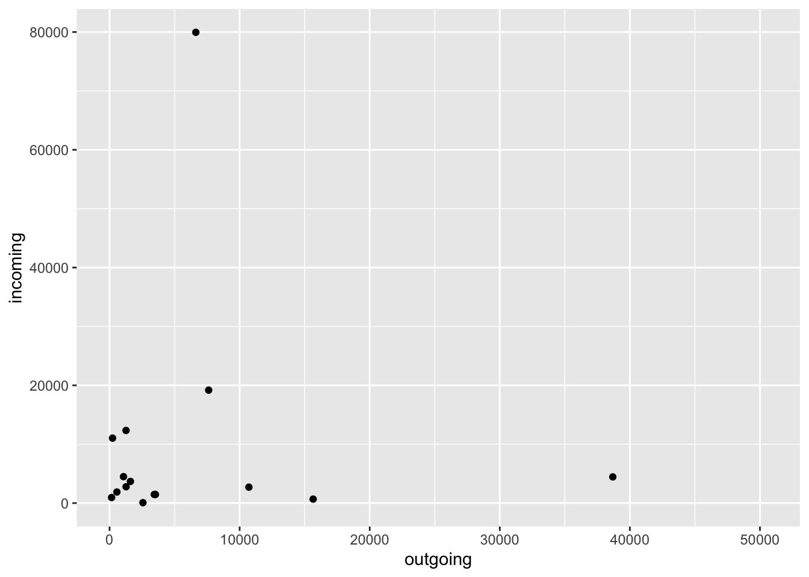
4 Time series
To create a time series we will need to reformat the data a little
bit so R can do what we want. We will introduce a new kind of variable:
date. The date variables are pretty much what it sounds
like, is a variable that has a format with year, month and day; there
are other ways to format dates in R, but this is the most common and
straight forward.
mov <- mov %>%
mutate(date = as.Date(date, "%m/%d/%y"), # First we will format the date
week = format(date, "%V"),
week = lubridate::floor_date(date, 'week')) # The we create a variable formatting the date as week of the yearNow that we have our variables in the correct format, we can use it as any other variable.
figures$timeseries <- mov %>%
count(week) %>%
ggplot() +
geom_line(aes(x = week, y = n))
figures$timeseries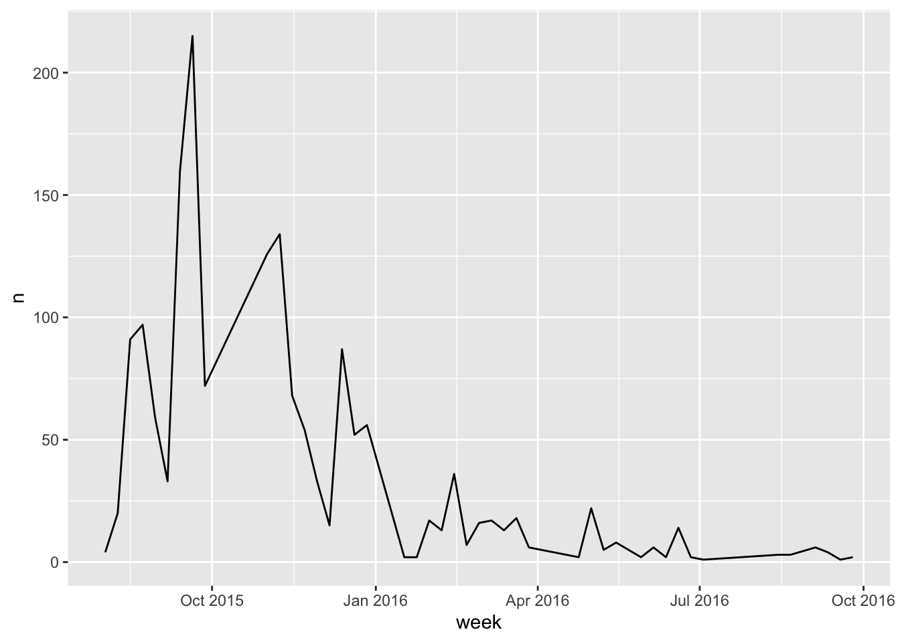
5 Arranging the plots in a layout
Now that we have all the figures in a list, we can make arrangements
with our figures. For this we use the function ggarrange()
from the ggpubr library.
library(ggpubr) # load the library
ggarrange(plotlist = figures)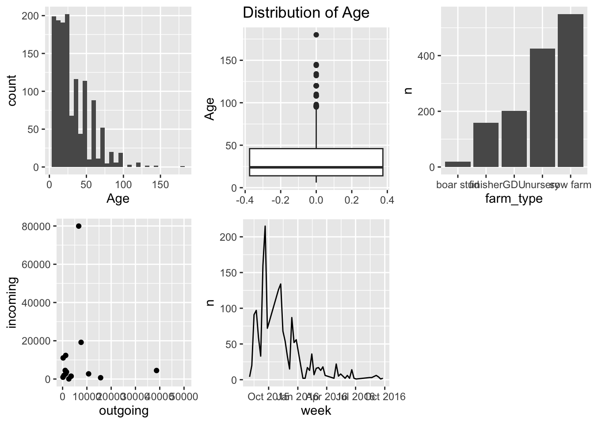
6 Further customization
6.1 Labels
Usually we try to avoid spaces when using names for the column names, but for our plots this could be not the most straight forward way to communicate our analysis, we can set specific labels to make our plots more readable and self explanatory. Let’s improve bar plot figure a bit more to make it clearer:
figures$bars <- PRRS %>%
count(farm_type) %>%
ggplot() +
geom_bar(aes(x = farm_type, y = n), stat = 'identity') + # type of barplot
labs(# We will use the function labs to generate our labels
title = 'Number of farms by type',
x = 'Farm type',
y = 'Number of farms'
)
figures$bars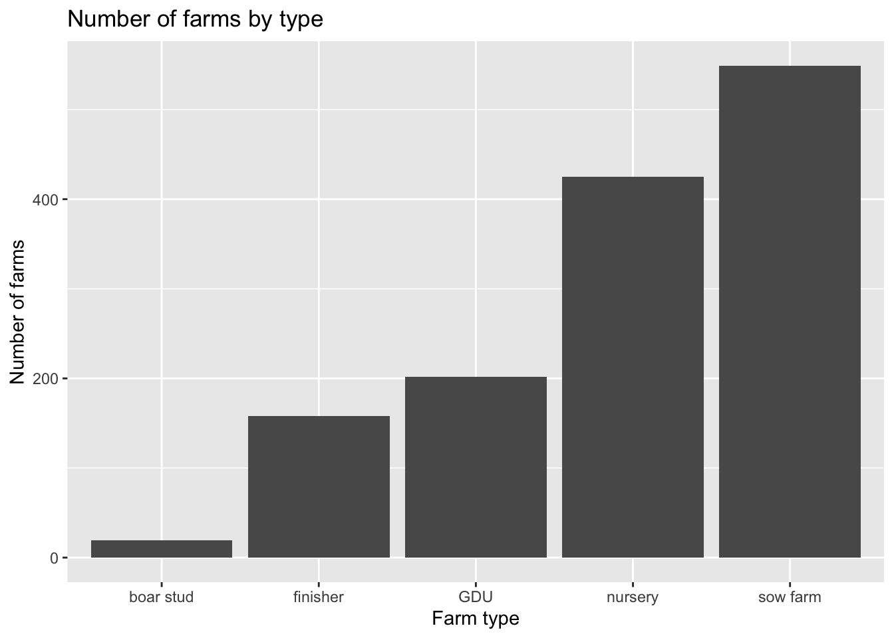
6.2 Themes
ggplot includes the function theme() to define most of
the aspects of the figure such as the background color, the grid, axes,
legend, among many others. There is also several predefined themes (all
start with theme_ followed by the name of the theme) that
you can use, if don’t want to mess with all the arguments from the
function theme(). For example:
# all the predefined themes start with theme_
figures$timeseries <- mov %>%
count(week) %>%
ggplot() +
geom_line(aes(x = week, y = n)) +
theme_minimal() # We will use the theme minimal
figures$timeseries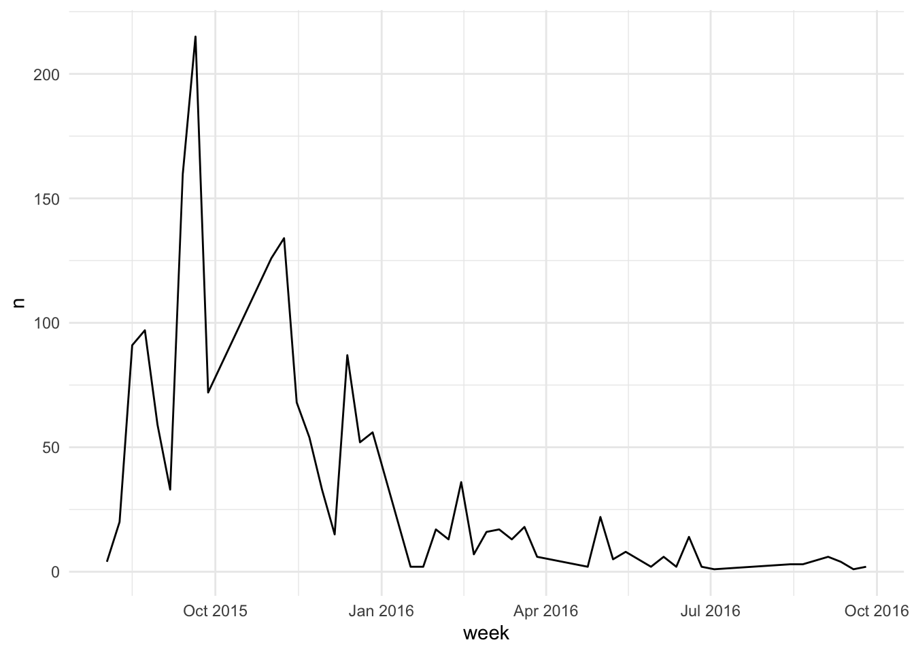
6.3 Other aesthetics
6.3.1 Shape
There are other aesthetics we can define such as color, type of point, size, among many others. Lets try changing the point shape for one of the plots we previously did:
figures$scatter <- farms %>% # the data we are using
ggplot() + # we call ggplot
geom_point(aes(
x = outgoing, # X axis
y = incoming, # Y axis
shape = farm_type # point shape
)) +
labs(title = 'Movements by farm') +
theme_classic() # now lets try the theme 'classic'
figures$scatter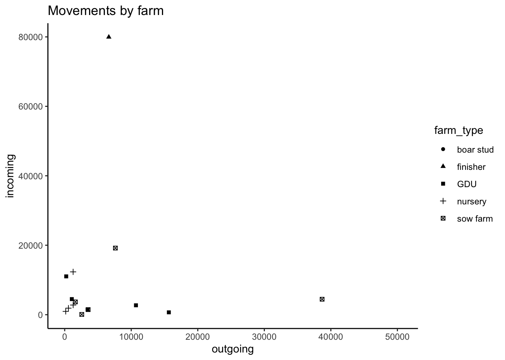
6.3.2 Color
In the next example we will use the Sex of the animal to color our boxplot:
PRRS %>%
ggplot() + # we call ggplot
geom_boxplot(aes(y = Age, fill = Sex)) # we add a boxplot layer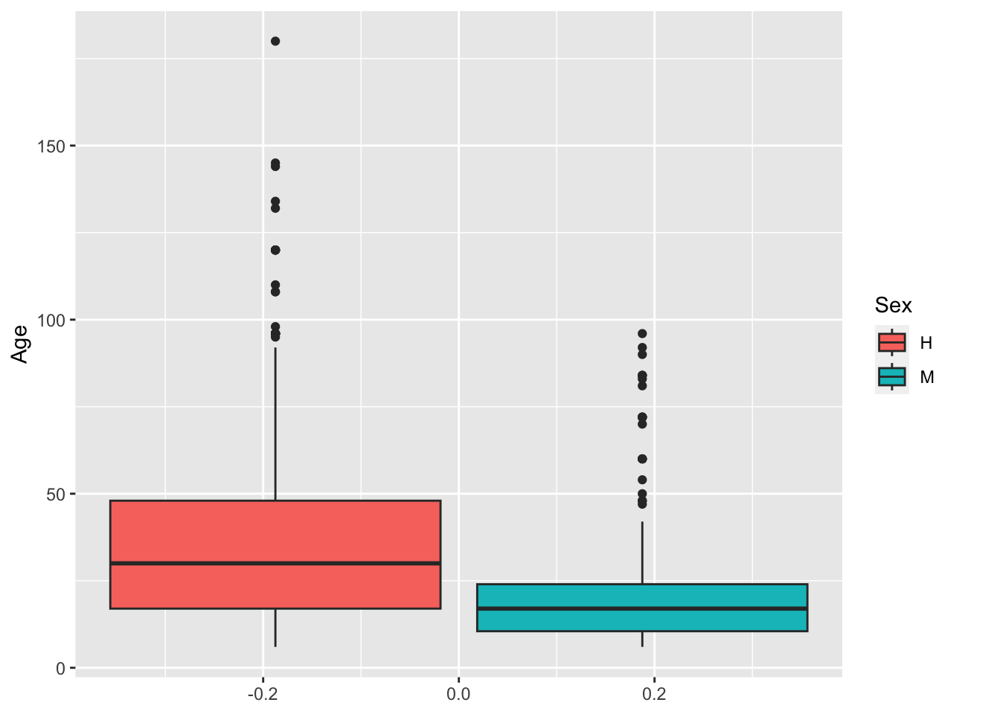
We can also use the variable to color other parts of the plot such as the border:
PRRS %>%
ggplot() +
geom_boxplot(aes(y = Age, col = Sex))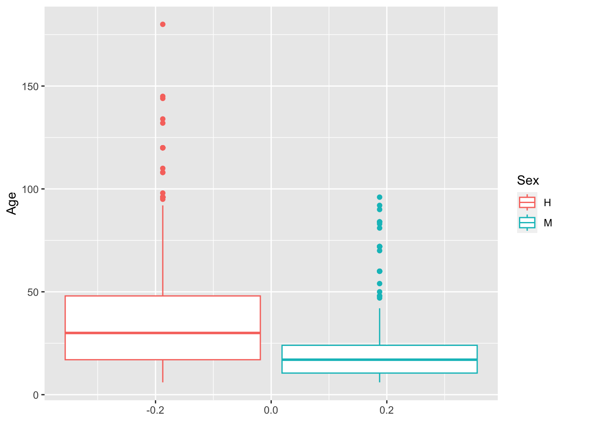
6.3.3 Non aesthetics customization
So far we have added variables inside our aes()
function, but we can add some arguments outside the aes()
function that we want them to be applied for all observations. For
example, we can change the outline of the boxplot to be the same for the
two groups, but the fill color different per group:
PRRS %>%
ggplot() + # we call ggplot
geom_boxplot(
aes(y = Age, fill = Sex), # This is the normal aesthetics we define
col = 'red' # all aesthetics we define here will be applied to all th ebservations
) # we add a boxplot layer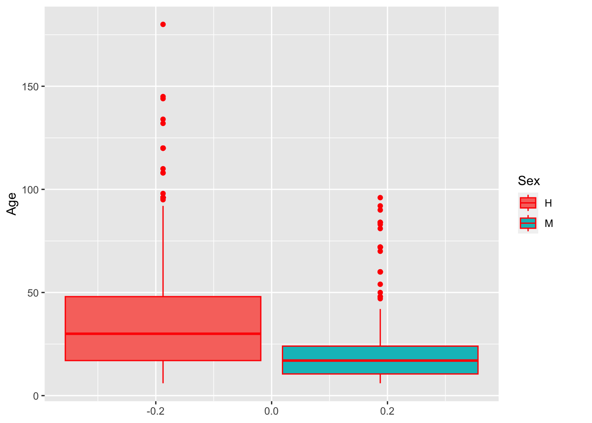
6.4 Colors
To define specific colors for our figure, we can use the function
scale_*_manual where the * represents the aesthetic we want
to represent. If we want to use the color for the fill, we would
use:
figures$box <- PRRS %>%
ggplot() +
geom_boxplot(aes(y = Age, fill = Sex)) +
scale_fill_manual(values = c('red', 'green'))
figures$box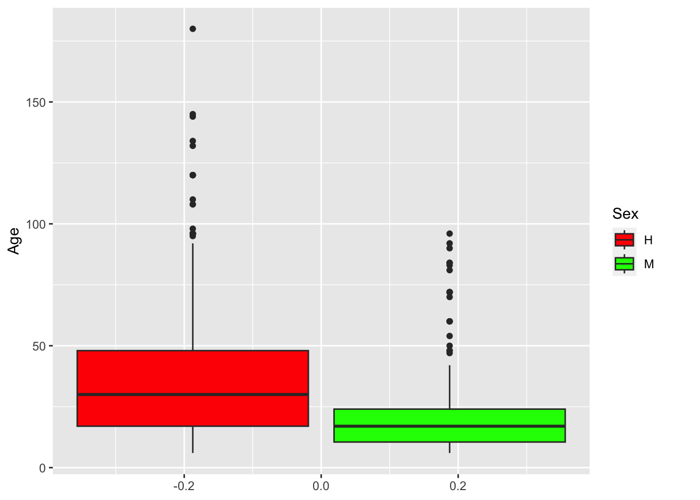
R manages colors in three different ways: by name (i.e: ‘red’), by
rgb value using the function rgb()
(i.e. rgb(1, 0, 0)), or using hexadecimal
code (i.e. “#F00000”). You can get a full list of the named colors
in R by using the function colors(), but you will only be
able to see the names. Luckly someone made a tool that can help us
exacly the colors that we want: the Colour Picker addin. Addins
are tools that are available in Rstudio to facilitate tasks, lets try
the colour picker (should be already in your addins toolbar).

Exercise: Pick two colors you like and use them to create a boxplot of the distribution of age by the test result.
7 Facets
Facets are a way of stratifying the data based on variables in the
data set, you can think about it in a similar way we have been using
groups. To create a stratified plot we can use the function
facet_grid() which will ask for a variable to go in the
rows and another for columns:
figures$histogram <- PRRS %>% # The data we will use
ggplot() + # we call ggplot
geom_histogram(aes(Age)) + # We will create a histogram of the Age
facet_grid(
rows = vars(Sex), # We will use the Sex variable for rows
cols = vars(Result) # We use the Result variable for Columns
) +
theme_linedraw() # lets try another theme
figures$histogram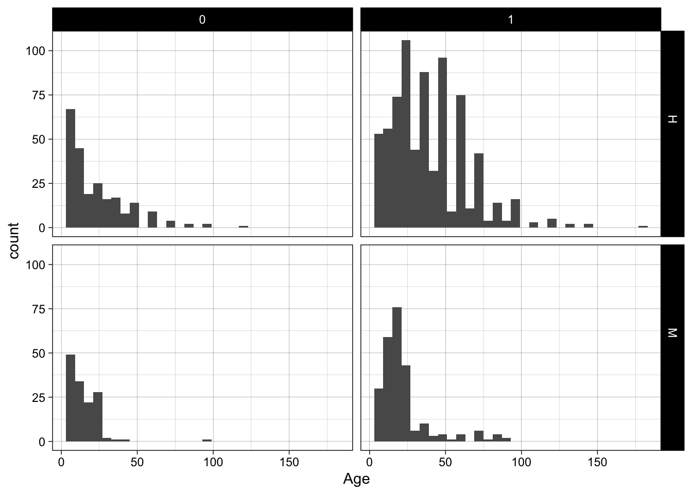
8 Exporting plots
Now that we have a good mix of different figures, lets export them.
We can use the function ggsave() to export a high
definition figure.
ggsave(figures$histogram, filename = 'myHistogram.png')8.1 More customization
You can create more detailed arrangements of figures like i will show in the following example:
ggarrange( # Funciton to arrange the figures
figures$box, figures$scatter, figures$bars, figures$timeseries, # These are the figures I will arrange
heights = c(5, 3), # We can define the heights for each of the rows
labels = c("A","B", "C", "D") # add a label for each figure
) %>%
annotate_figure( # Function to annotate the figure
top = text_grob( # Top title
label = 'Distribution of the data', # Label for title
face = 'bold', # Bold letters
size = 18 # Size of the title
)
)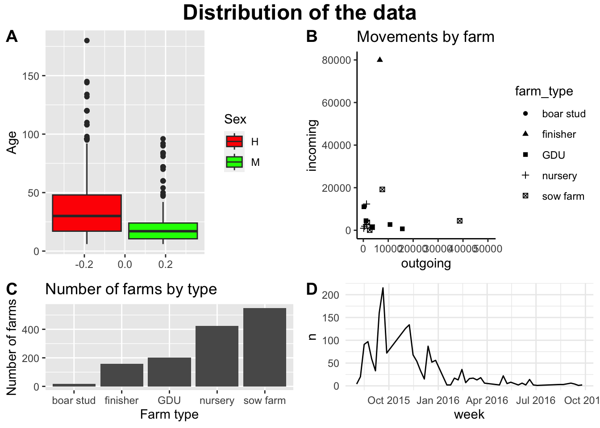
9 Interactive figures
Having static figures is the most common application of graphics in
R, but R is also capable of making interactive figures that can be used
in dashboards and other platforms (i.e. shiny, or quarto). There are
several libraries that allow you to create interactive figures, one of
the most popular ones is called plotly. The best part of
plotly is that if you learn how to use ggplot, you can transfer your
figures to interactive plotly figures pretty much seamesly. Lets try
that.
We use the function ggplotly() from the
plotly library to do that:
library(plotly) # laod the plotly library
# Use the ggplotly function in one of the figures we previouslt created:
ggplotly(figures$histogram)10 Other type of figures
Here we did not covered all the different visualization tools available in R, there are several other type of figures you can do. A good resource for this is the https://r-graph-gallery.com. this is a website that has multiple categories of figures and code to reproduce them all. Let’s take some time to explore the different types of visualizations available. Go to the website and explore on your own for a little bit.
This lab has been developed with contributions from: Jose Pablo
Gomez-Vazquez.
Feel free to use these training materials for your own research and
teaching. When using the materials we would appreciate using the proper
credits. If you would be interested in a training session, please
contact: jpgo@ucdavis.edu